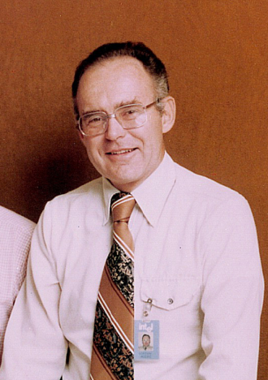

--rh-size-icon-03
Radia Perlman
Mother of the Internet
--rh-size-icon-05

Gordon Moore
Co-founder,
Intel
--rh-size-icon-06
(default)
Katherine Johnson
Recipient, National Medal of Freedom 2016
--rh-size-icon-08
Avatars cannot be larger than
--rh-size-icon-06
Hedy Lamarr
Jewish actress and inventor